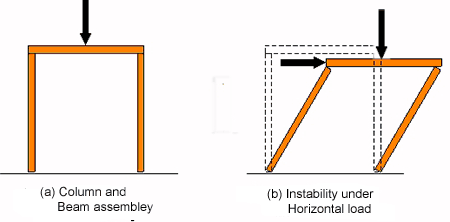
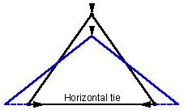
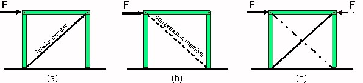
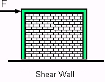
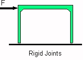

BracingStability is a crucial issue in the design of structures. The post-and-beam structure illustrated in Figure 1(a) is apparently stable. However, the structure has no capacity to resist horizontal loads and will collapse when a horizontal force is activated. There are really only a few fundamental ways of converting a self-standing structure of the general type shown in Figure 1 (b) from an unstable to a stable configuration. 
Figure 1There are three methods of stabilisation: 1 TriangulationThree members pinned at the ends forming a triangle make up a stable structure. As can be seen the load at the apex cannot push the inclined members down because the horizontal member held them together. Triangulation is widely used in timber and steel framing. A post and beam structure can be stabilised by diagonal bracing. Lateral load (usually wind load) can act on both sides of the structure as shown in Figure 2. Braces are therefore in compression or in tension depending on which side of the structure the load is acting. As compression members tend to buckle tension members are preferred as bracing elements. For this reason is cross-bracing the most common type of bracing (see Figure 2 (c)). Figure 2Another method used to ensure stability is through shear walls. 2 Shear wallsThese are rigid planar surface elements that resist shape changes of the frame type illustrated in Figure 3. A reinforced concrete or masonry wall can be used as a shear wall (see Figure 3. In timber framing plywood panels are used in this sense to resist the raking force induced by the wind. A final method used to achieve stability is by introducing rigid joints between the members. 3 Rigid jointsThis is a very common form of joint, especially in reinforced concrete construction and to a lesser extent in steel construction because moment resisting connections are more costly than flexible connections. A typical table, for example, is a stable structure because there is a rigid joint between each table leg and the top that maintains the 90° angle between the legs and the table top. Structures that provide rigid stability are referred to as frames. Figure 3 |